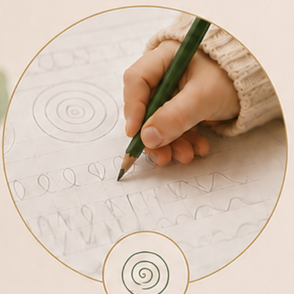
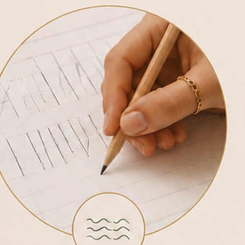
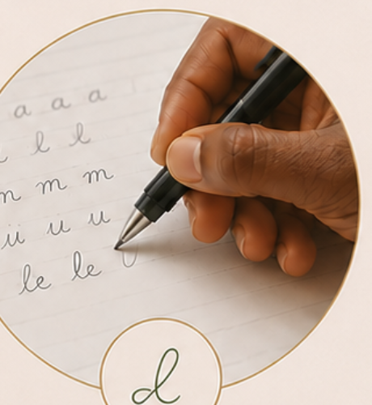
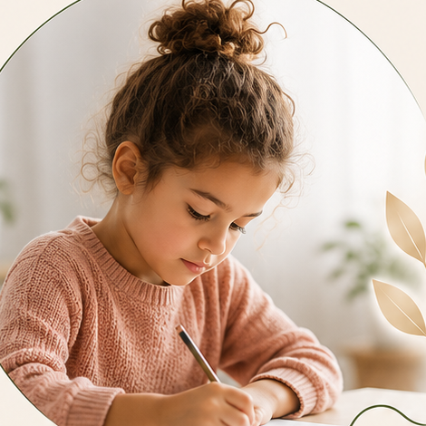
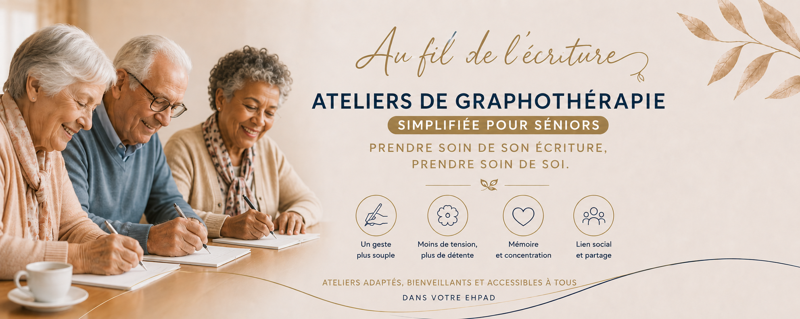

Reconnaître les signes, comprendre la méthode
Des raisons qui peuvent vous amener à demander un bilan, à tout âge.



Motricité fine et coordination
Un geste mieux maîtrisé, plus assuré.

Précision et régularité
Des lettres plus lisibles, un tracé plus stable.

Fluidité et aisance
Une écriture plus rapide, sans fatigue.
Des signes au quotidien
•Son écriture est illisible
•Il se plaint de douleurs lorsqu’il écrit
•Il écrit trop lentement
•Il tient mal son stylo
•Ses cahiers sont peu soignés
•Il montre une anxiété, voire un refus, face à l’écrit
L’écrit devient un frein
•Il se relit difficilement
•Il ne termine pas ses évaluations par manque de temps
•Il a des douleurs lorsqu’il écrit longtemps
•Il a du mal à prendre les cours en note
•Ses professeurs font des remarques sur son écriture
Un besoin d’efficacité
•Vous vous relisez difficilement
•Vous préparez un concours ou un examen
•Votre entourage fait des remarques sur votre écriture
La méthode
Le bilan
Un premier rendez-vous de 1h30 à 2h : nous prenons le temps de faire connaissance et d'observer l'écriture. Le bilan comprend une évaluation à l'échelle d'Ajuriaguerra, un outil de référence pour analyser objectivement les composantes de l'écriture manuscrite.
Cet échange permet d'identifier les besoins et de proposer un accompagnement personnalisé. Si c'est plus pertinent, je peux vous orienter vers un autre professionnel. Compte-rendu écrit envoyé par mail.
Les séances
Chaque séance de 45 minutes commence par des exercices de détente, de concentration et de motricité fine. Le geste est ensuite travaillé par des activités variées et ludiques. Les supports et les outils changent, selon l'âge et les objectifs.
Une séance toutes les deux semaines, avec des points d'étape réguliers — partagés avec les parents pour les enfants.
Le suivi offert
Un rendez-vous de suivi, offert, est proposé à 3 mois et/ou 6 mois après l'accompagnement.
Nous évaluons ensemble les effets des séances, faisons le point sur les progrès accomplis et ajustons si besoin.
Les tarifs
Bilan graphomoteur
Entretien et passage des tests (1 h 30 à 2 h). Évaluation à l’échelle d’Ajuriaguerra (un test de référence pour mesurer l’écriture). Compte-rendu écrit envoyé par mail.
Séance — enfant / adolescent
45 min + 5-10 min de restitution avec le parent.
Séance — adulte
45 min de rééducation de l’écriture.
Sur rendez-vous uniquement. Au cabinet à Corme-Écluse (17600), ou à domicile selon la zone géographique.
Prise en charge possible par certaines complémentaires santé
Les séances de graphothérapie ne sont pas prises en charge par l'Assurance Maladie. Certaines mutuelles proposent toutefois une prise en charge, partielle ou totale. Cela dépend de leurs forfaits. N'hésitez pas à vous rapprocher de votre organisme complémentaire afin de connaître vos droits.
Les ateliers d'écriture
Des moments d'écriture en tout petit groupe. Pour les enfants et les adolescents pendant les vacances. Pour les séniors au sein des établissements.

Enfants & adolescents · vacances scolairesLes secrets d'une écriture confortable
Votre enfant a parfois mal à la main ? Il se fatigue vite quand il écrit, ou il aimerait simplement écrire plus facilement ? Pendant 2 heures, place aux jeux, aux défis et aux astuces.
•Bien s'installer pour écrire
•Tenir son crayon avec plus de confort
•Retrouver le plaisir d'écrire, sans stress
En tout petit groupe, dans la bonne humeur, pour que chacun et chacune progresse à son rythme.

Séniors · en établissement (type EHPAD)Écrire pour stimuler et garder le plaisir du geste
L'écriture mobilise la mémoire, l'attention, la concentration, la coordination et la motricité fine. En petits groupes, ces ateliers offrent un moment de bien-être, de stimulation et de partage.
•Retrouver un geste plus fluide et plus confortable
•Stimuler la mémoire, l'attention et les fonctions cognitives
•Entretenir la motricité fine et la coordination
•Renforcer la confiance et préserver l'autonomie
Petits groupes de 4 à 8 personnes, au sein de votre établissement. Des exercices progressifs, ludiques et bienveillants. Au rythme et selon les capacités de chacun et chacune.